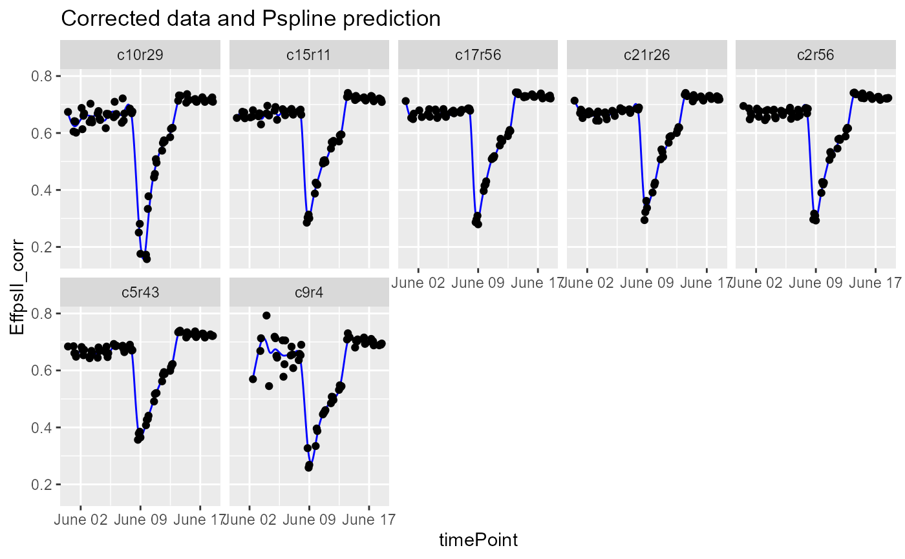
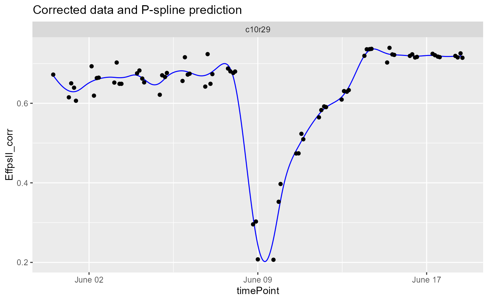
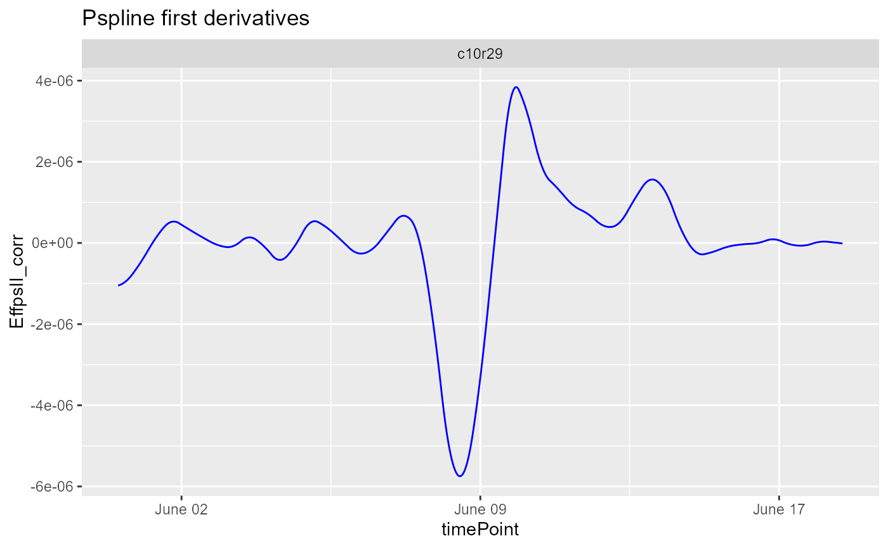

Fit P-Splines on corrected or raw data. The number of
knots is chosen by the user. The function outputs are predicted P-Spline
values and their first and second derivatives on a dense grid. The
outputs can then be used for outlier detection for time series
(see detectSerieOut) and to estimate relevant parameters from
the curve for further analysis (see estimateSplineParameters).
fitSpline( inDat, trait, genotypes = NULL, plotIds = NULL, knots = 50, useTimeNumber = FALSE, timeNumber = NULL, minNoTP = NULL )
| inDat | A data.frame with corrected spatial data. |
|---|---|
| trait | A character string indicating the trait for which the spline should be fitted. |
| genotypes | A character vector indicating the genotypes for which
splines should be fitted. If |
| plotIds | A character vector indicating the plotIds for which splines
should be fitted. If |
| knots | The number of knots to use when fitting the spline. |
| useTimeNumber | Should the timeNumber be used instead of the timePoint? |
| timeNumber | If |
| minNoTP | The minimum number of time points for which data should be available for a plant. Defaults to 80% of all time points present in the TP object. No splines are fitted for plants with less than the minimum number of timepoints. |
An object of class HTPSpline, a list with two
data.frames, predDat with predicted values and coefDat
with P-Spline coefficients on a dense grid.
Other functions for fitting splines:
estimateSplineParameters(),
plot.HTPSpline()
## The data from the Phenovator platform have been corrected for spatial ## trends and outliers for single observations have been removed. ## Fit P-Splines on a subset of genotypes subGeno <- c("G070", "G160") fit.spline <- fitSpline(inDat = spatCorrectedVator, trait = "EffpsII_corr", genotypes = subGeno, knots = 50) ## Extract the data.frames with predicted values and P-Spline coefficients. predDat <- fit.spline$predDat head(predDat)#> timeNumber timePoint pred.value deriv deriv2 plotId #> 1 0 2018-05-31 16:37:00 0.6697508 -8.895665e-07 2.050206e-12 c10r29 #> 2 800 2018-05-31 16:50:20 0.6690398 -8.878210e-07 2.313593e-12 c10r29 #> 3 1600 2018-05-31 17:03:40 0.6683303 -8.858648e-07 2.576979e-12 c10r29 #> 4 2400 2018-05-31 17:17:00 0.6676225 -8.836978e-07 2.840366e-12 c10r29 #> 5 3200 2018-05-31 17:30:20 0.6669164 -8.813202e-07 3.103753e-12 c10r29 #> 6 4000 2018-05-31 17:43:40 0.6662124 -8.787318e-07 3.367140e-12 c10r29 #> genotype #> 1 G160 #> 2 G160 #> 3 G160 #> 4 G160 #> 5 G160 #> 6 G160#> obj.coefficients plotId type genotype #> 1 0.6980810 c10r29 timeNumber1 G160 #> 2 0.6694202 c10r29 timeNumber2 G160 #> 3 0.6427428 c10r29 timeNumber3 G160 #> 4 0.6279562 c10r29 timeNumber4 G160 #> 5 0.6286394 c10r29 timeNumber5 G160 #> 6 0.6474903 c10r29 timeNumber6 G160## Visualize the P-Spline predictions and first derivatives for one plant. plot(fit.spline, plotIds = "c10r29", plotType = "predictions")